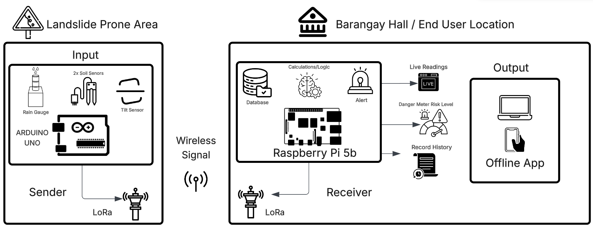

Sensor node (slope)
- Arduino Uno R3 firmware (C++)
- 2× capacitive soil moisture sensors, calibrated dry/wet
- Rain gauge
- MPU6050 accelerometer for slope tilt
- BME280 temperature, humidity and pressure
- SX1278 LoRa transmitter
Landslide Early Warning System — Leon, Iloilo
Starting simulator…
Each reading represents one 5-minute sensor interval, sped up to one every 2 seconds. Rolling rainfall windows count readings (1 hr = 12 readings).
| Time | Level | Score | Message | Status |
|---|---|---|---|---|
| No alerts yet — monitoring active | ||||
About the project
Project Iraya monitors landslide-prone slopes in Leon, Iloilo. A sensor node on the slope sends readings over LoRa radio (433 MHz, 2–5 km range) to a Raspberry Pi 5 at the barangay hall. The Pi scores the landslide risk, raises alerts and serves this dashboard over a local Wi-Fi hotspot. It needs no internet connection or cloud service, so it keeps working when typhoons knock out mobile networks.

Each reading becomes a set of features: rolling rainfall over 1, 3, 24 and 72 hours, rainfall intensity, soil moisture trend, tilt magnitude and rate, and the 3-hour pressure drop. Each factor is scored from 0 to 100 against localized thresholds adapted from PAGASA rainfall warnings, then combined:
Override rules: if rainfall, soil moisture or slope movement alone reaches danger level, the alert is raised to at least WARNING. If rainfall and soil moisture are both critical, it goes straight to DANGER.
| Level | Score | Action |
|---|---|---|
| SAFE | 0–30 | Normal monitoring |
| CAUTION | 31–60 | Monitor closely |
| WARNING | 61–90 | Prepare to evacuate |
| DANGER | 91–100 | Evacuate immediately |